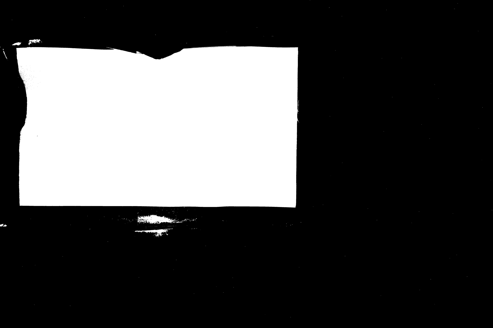

A pinhole camera lets light through a small 1mm-5mm hole known as the "pinhole" and forms an image on the other side of the pinhole. Instead of being scattered, light entering through the pinhole is "organized" such that the 3D world on the other side of the pinhole is reconstructed in 2D. This project involves building a pinhole camera with a cardboard box and some paper. We use a DSLR camera with long exposure to digitally capture the image formed on the pinhole camera's imaging plane.
A.... mess
Artificial Light
Finally.... phewwww

Sniper in ambush
These are pictures after being cropped, rotated and enhanced.
Captain Ameicaaaaaaaaaaa
Is it Doe, my dear?
A grid of lightsabers?
ughhh, can't see their faces.
Ghostinggggg
Hope I don't get into this loop, I wanna get outta schoollll
Autocropping aims to localize the image plane of the pinhole camera inside the cardboard box, automatically. Here's an image of what the imaging plane of the pinhole camera looks like when captured by the DSLR.

We recognize that the pixel intensities where the image is formed is much higher than the intensities of the pixels around it. This suggests a need for a global thresholding in order to binarize the image. This is what the binarized image looks like.
You may notice that there are still some white blobs which don't belong to the imaging plane we're interested in. We use the MATLAB function bwareaopen to denoise the image by removing connected components of white pixels smaller than a specified area. Since the connected component we are interested in is much larger than the noise, this is easy. Here's the result of denoising.
Now that we have segmented the region of interest, we need to compute a crop region. We recognize that the imaging plane is a convex shape, so we can use the MATLAB function convhull to find the convex hull which is a tight set of vertices of a polygon surrounding the region of interest.
Finally, we find the closest rectangle to the computed convex hull (which we assume to be rectangular-ish) and do some color correction, described in the next section. Here's the output image of our algorithm.
This approach searches for rows and columns which have higher intensities than or rows and columns and return the four corners of the most recognized parts of the image.
This is the original image.

This is the result after cropping and rotating process.
The black borders is almost completely eliminated.
The biggest challenge was to choose a threshold that works for every image and the problem was solved by averaging out the max and min intensities in both rows and columns.
First, I tried to use fuction rescale_intensity in Skimage library to balance the intensity of the image.
Before
After

Secondly, I tested the with function equalize_hist in Skimage library to balance the histogram.
Before
After
Then I tried another function called adapthist in the same library to see if it made any difference.
Before
After
Finally, I combined all three methods above.
Before
After
These are different results in different apartures, locations, and time in the day

ADD HERE

ADD HERE

ADD HERE

ADD HERE

ADD HERE

ADD HERE

ADD HERE

ADD HERE

ADD HERE

ADD HERE

ADD HERE

ADD HERE

ADD HERE

ADD HERE

ADD HERE

ADD HERE

ADD HERE

ADD HERE

ADD HERE